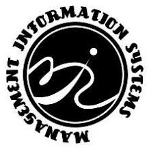

NPUST MIS
首頁
(current)
關於資管
28屆系學會成員
活動
Search
屏科大資管特色
資管應用服務與整合系統
本系所旨在培育系統研發與資訊管理人才，以協助企業導入資訊科技，提昇競爭力。練學生具有分析、規劃、設計、建構與管理能力，強調理論與實務並重，反應資訊技術之最新趨勢與其應用，縮短學用落差。(吳敦義副總統參觀專題競賽)
實務專題、產學接軌
藉由專題成果報告及系統展示，以呈現實務專題成果，並聘請業界專家及全系老師共同評審，在兩年實務專題製作過程，結合業界需求及校外實習，以落實理論與實務應用能力。
資管尖兵、創業有成
本系發展目標為培養「台灣資管領域中堅人才」，授以「資訊系統實現與整合」及「資訊科技應用與創新」的專業能力養成內容，培養具備系統整合、應用及專案管理之專業能力、理論與實務並重之資訊技術及資訊管理人才。(創業代表：凌誠科技股份有限公司)
全國首創專題實驗室
本系設有專題特色實驗室，提供大學部學生實務專題製作固定的空間與位置，以利學生彼此討論觀摩及學長姐帶領學弟妹的經驗傳承，加強學生學習及團隊合作的訓練，並落實產學合作機制。(吳敦義副總統參觀專題競賽)
國際及全國性競賽優異
本系除強化學生專業能力之外，也積極參與各項全國性競賽，藉此擴展視野，激發創新、創意及培養表達能力。歷年競賽成果豐碩，不斷創新紀錄，獲業界青睞，進而提升產學成果。
傑出系友、回饋社會
系友就業於國內各大知名企業、學術機構，例如：IBM、台積電、宏達電、雅虎、工研院、中研院、資策會、廣達、日月光、群創、輝創、正文、精英、和碩及各大學任教。